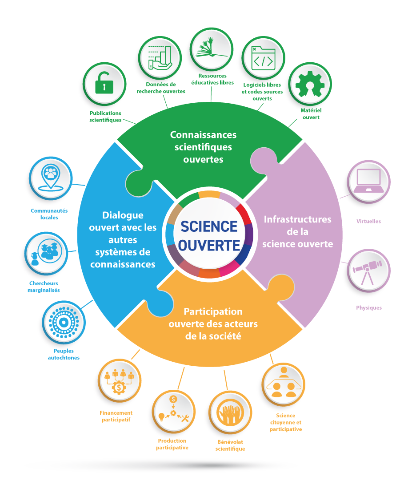
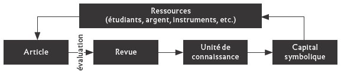
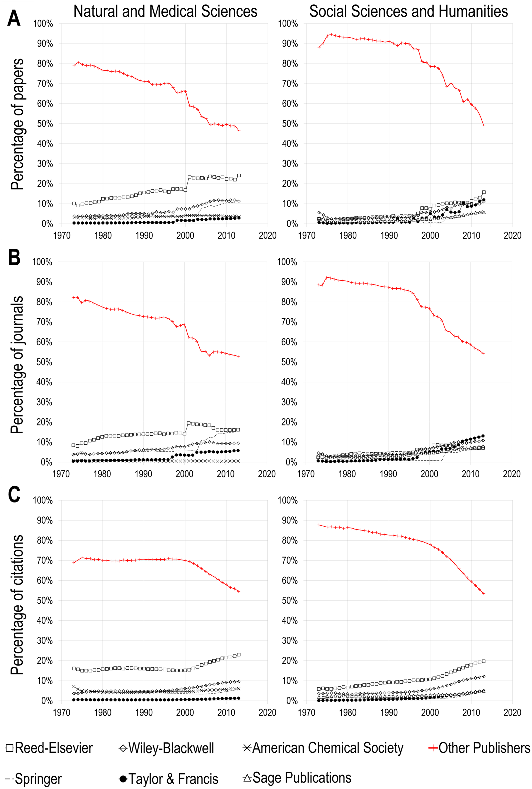
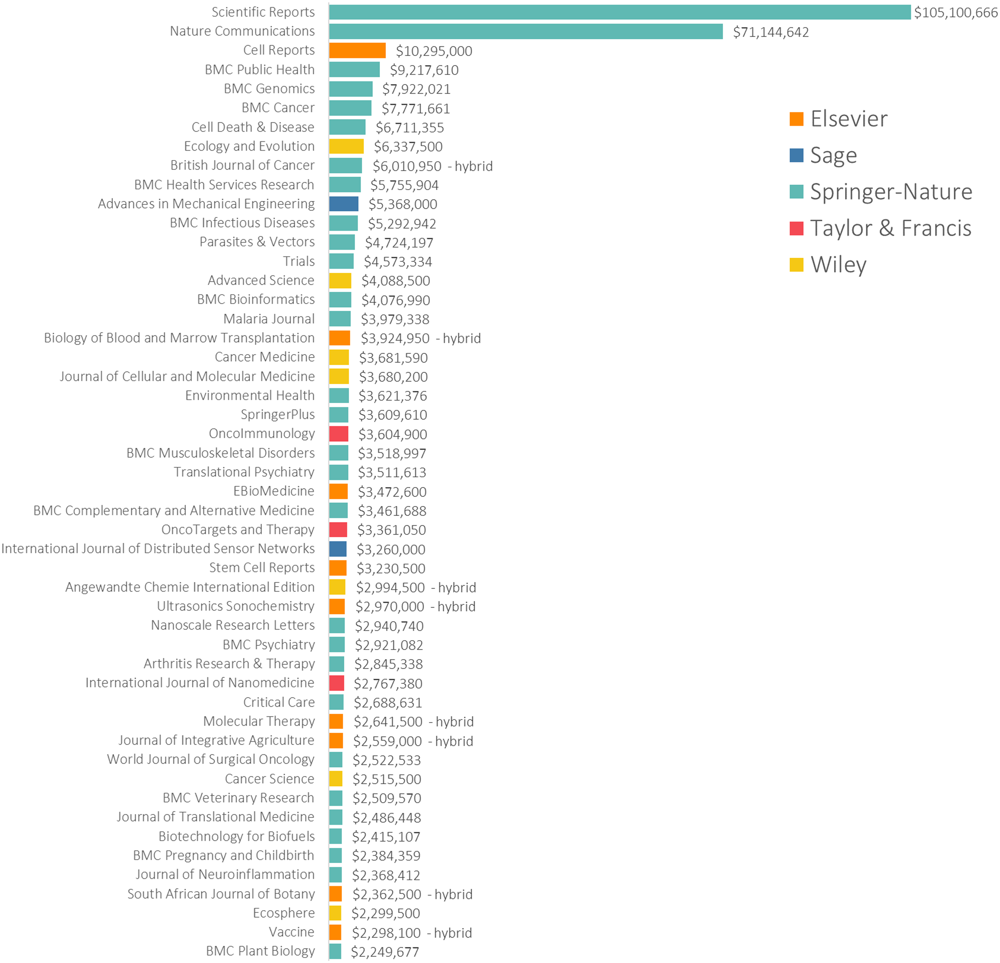
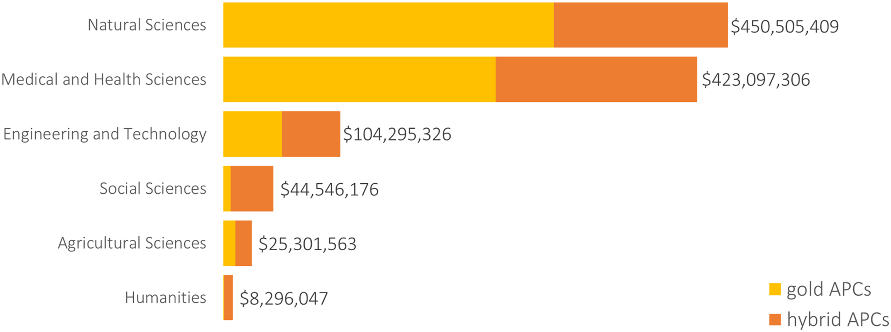
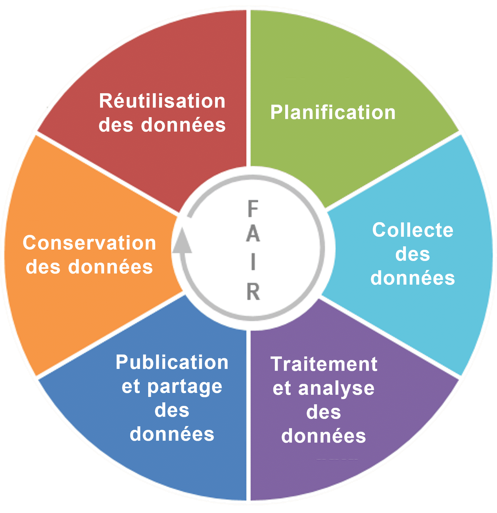

Enjeux de la « Science Ouverte »
GS Humanités & Sciences du Patrimoine : journée de rentrée des doctorants
Quelques applications pratiques
Pour bien comprendre ce qui est en jeu dans la Science Ouverte, voici quelques questions pratiques auxquelles vous devriez être confronté·es dans les années qui viennent :
- votre thèse – dans sa version de soutenance – sera-t-elle diffusée en libre accès ? Pour l’ED Sciences Sociales et Humanités, 95 thèses l’ont été sur 145 soutenues à ces 6 dernières années (voir ici)
- le premier article que vous publierez dans une revue sera-t-il accessible à tout le monde, gratuitement ? Uniquement aux abonnés de cette revue ? Devrez-vous payer des frais de publication ?
- avez-vous le droit de diffuser vous-mêmes un article dont vous êtes l’auteur dès lors que celui-ci a déjà été publié dans une revue ?
- si vous collectez (voire créez) des « données » dans le cadre de votre thèse, qu’allez-vous en faire ? Pourrez-vous – devrez-vous – les rendre disponibles ?
-> Toutes ces questions relèvent d’une manière ou d’une autre de la Science Ouverte.
« Science Ouverte » ?
Il y a plusieurs manières de parler de la Science Ouverte. On pourrait par exemple présenter :
des outils, des méthodes, des recommandations – qui parfois deviennent des normes,
les infrastructures numériques qui sous-tendent la science ouverte et la rendent possible,
les enjeux politiques, financiers, voire épistémologiques derrière ces outils et ces infrastructures,
les acteurs et les réseaux, en général ou pour une discipline en particulier…
On tentera d’évoquer ici, rapidement, tous ces sujets, en privilégiant bien sûr certains aspects, notamment ceux qui pourront vous servir dans le cadre de votre travail de thèse d’abord, mais aussi pour la suite de votre carrière.
En contexte : les mutations de la communication savante
Une remarque préliminaire : la Science Ouverte n’est pas séparable des mutations du champ de l’édition scientifique induites, depuis au moins 25 ans, par la numérisation massive des publications.
La plupart des revues scientifiques sont désormais consultables en ligne ; une part croissante des livres l’est également.
A côté des grands portails numériques des éditeurs, se développent des « infrastructures de communication savante » (Mounier, 2020) qui jouent chacune un rôle particulier dans l’écosystème de la Science Ouverte. En France, pensez à HAL, à Persée, à OpenEdition, à Nakala, à Recherche Data Gouv….
La Science Ouverte, combien de définitions ?
Si vous n’avez jamais lu ou entendu ce terme, ou n’avez qu’une vague idée de ce qu’il recouvre, il faut sans doute commencer par le définir. Les définitions de la Science Ouverte sont nombreuses ; elles sont rarement très concises. En voici quatre extraits, par ordre chronologique de rédaction, où l’on voit apparaître certains glissements sémantiques.
La science ouverte est la diffusion sans entrave des publications et des données de la recherche. Elle s’appuie sur l’opportunité que représente la mutation numérique pour développer l’accès ouvert aux publications et – autant que possible – aux données de la recherche (Ministère de l’Enseignement supérieur, de la Recherche et de l’Innovation, 2018)
La science ouverte est la diffusion sans entrave des résultats, des méthodes et des produits de la recherche scientifique. Elle s’appuie sur l’opportunité que représente la mutation numérique pour développer l’accès ouvert aux publications et – autant que possible – aux données, aux codes sources et aux méthodes de la recherche. (Ministère de l’Enseignement supérieur, de la Recherche et de l’Innovation, 2021)
La science ouverte s’entend comme un concept inclusif qui englobe différents mouvements et pratiques visant à rendre les connaissances scientifiques multilingues, librement accessibles à tous et réutilisables par tous, à renforcer la collaboration scientifique et le partage des informations au profit de la science et de la société, ainsi qu’à ouvrir les processus de création, d’évaluation et de diffusion des connaissances scientifiques aux acteurs de la société. au-delà de la communauté scientifique traditionnelle. (UNESCO, Recommandation sur une science ouverte)
La science ouverte repose sur un principe essentiel qui consiste à rendre accessible, autant que possible, les méthodes, les matériaux et les résultats de la recherche. Elle amplifie le rayonnement de la recherche dans le monde académique et dans la société, contribue à améliorer la reproductibilité, la préservation et la réutilisation des matériaux de la recherche, et renforce l’intégrité et la transparence du processus scientifique. (Ministère de l’Enseignement supérieur, de la Recherche et de l’Innovation, 2026)
Les 6 « piliers » de la Science Ouverte
La science ouverte, c’est donc beaucoup de choses, un objet polymorphe. Une première approche, disons pragmatique, reprendrait les défintions qu’en donnent les acteurs eux-mêmes : en l’occurrence, ces défintions relèvent souvent d’un discours d’institution.
Dans cette conception, on parle souvent des six « piliers » de la science ouverte. Que voici, d’après (Bastin et al., 2026) :
- Open Access : Publier vos résultats de recherche en libre accès pour qu’ils soient lisibles par tous, sans abonnement.
- Open Data : Partager vos données de recherche (brutes ou bien retraitées) de manière aussi ouverte que possible et aussi fermée que nécessaire.
- Open Source : Utiliser et développer des logiciels et du matériel libres et transparents [par ex. dont le code source ou les spécifications sont ouverts et documentés].
- Open Evaluation : Rendre l’évaluation par les pairs (peer review) plus transparente et collaborative.
- Open Education : Partager vos supports de cours et outils pédagogiques.
- Science participative : Impliquer les citoyens et la société civile dans les processus de recherche.
Les 4 « barrières » à lever
La science ouverte, c’est donc une manière de faire de la recherche, de la publier, de l’évaluer, de la diffuser, en faisant en sorte de lever, ou a minima de réduire, les barrières à l’accès :
- aux publications elles-mêmes ;
- aux données qui sous-tendent ces publications et jouent un rôle fondamental dans l’administration de la preuve ;
- aux méthodes et outils qui ont permis de traiter ces données ;
- et aux processus d’évaluation par les pairs qui ont légitimé, scientifiquement, ces publications.
Et encore…
Mais ce n’est pas seulement cela, la Science Ouverte. La conception qu’en ont certains acteurs, est assez large. Voici, par exemple, l’interprétation que donne l’UNESCO des “piliers”, ici réduits à quatre :

C’est une conception de la Science Ouverte qui traduit un changement d’ambition. En intégrant la “participation ouverte des acteurs de la société” et en recommandant le “dialogue ouvert avec les autres systèmes de connaissance”, l’UNESCO va au-delà des seules questions de diffusion, d’accès, de transparence ou de reproductibilité des recherches : la création de nouvelles relations entre science et société y tient une place essentielle, qui va jusqu’à remettre en cause les hiérarchies (ou les positions) implicites dans la production du savoir.
… en construction depuis bientôt 40 ans…
La Science Ouverte est donc un objet assez complexe, à plusieurs dimensions, construit petit à petit depuis bientôt 40 ans. L’évolution de l’open access (mouvement né de chercheurs militants) vers la Science Ouverte – devenue un terme courant du lexique universitaire – n’est pas seulement sémantique : elle traduit une forme d’institutionnalisation. Ainsi :
- La France dispose depuis 2018 de Plans Nationaux pour la Science Ouverte (le dernier en date est la Stratégie de science ouverte 2026-2033, publié l’an dernier) ; des équivalents existent au niveau européen.
- Des agences de financement comme l’ANR exigent des chercheurs qu’ils financent qu’ils se conforment à certaines exigences en matière de publication de leurs articles en accès ouvert, et d’ouverture de leurs données de recherche.
- Les universités et les Organismes Nationaux de Recherche (CNRS…) proposent souvent des déclinaisons locales de la politique ministérielle.
Cette institutionnalisation a parfois tendance à aplatir les enjeux de la Science Ouverte, ou à les présenter comme consensuels. Ce n’est pas tout à fait le cas, pourtant, en particulier dans les Humanités et Sciences Sociales. Pour approfondir ce point, voir par exemple (Galonnier et al., 2019 ; Primbault et al., 2026)
De manière générale, la science ouverte, dans sa définition admise comme dans ses enjeux, hérite d’une histoire, et le cadre de référence de cette histoire a longtemps été quasi-exclusivement celui des STM (Sciences, Techniques et Médecine), non celui des SHS ou des Humanités. Cet héritage se ressent dans certaines formulations officielles, certaines considérations sur l’édition scientifique ou les “données de recherche”.
Ouvrir les publications : l’open access
Définitions
Open access = accès ouvert ou libre accès (deux termes pas tout à fait équivalents).
La littérature en accès ouvert est numérique, en ligne, gratuite et exempte de la plupart des restrictions en termes de droit d’auteur et de licence d’utilisation. (Suber, 2016)
Mise à disposition gratuite et immédiate sur internet de publications scientifiques, permettant à tous de lire, télécharger, copier, distribuer et utiliser ces travaux sans barrières financières ou techniques. (Budapest Open Access Initiative, 2002)
Publier vos résultats de recherche en libre accès pour qu’ils soient lisibles par tous, sans abonnement. (Bastin et al., 2026)
Pourquoi « ouvrir » ?
Non pas tant “pourquoi” au sens moral de : est-ce bien ou mal, ou au sens stratégique de : est-ce ou non un avantage pour faire carrière dans la recherche (de fait, les articles en libre accès sont statistiquement plus cités), mais plutôt au sens de : pourquoi « l’ouverture » des publications est-elle devenue une question ?
Pour bien comprendre, il faut avoir à l’esprit deux choses. Le mouvement de l’open access se situe à l’intersection de deux paramètres :
- l’importance des revues “académiques”, c’est-à-dire dotées d’un comité de lecture constitué de spécialistes du domaine, à la fois comme vecteurs de communication scientifique et comme instances de légitimation ;
- les grandes tendances de l’édition scientifique ces 30 dernières années.
Les revues comme instances de légitimation
Commençons par les revues : dans la plupart des disciplines des STM, et ce depuis plusieurs siècles, c’est la publication d’un article dans une revue académique qui constitue la forme attendue de la communication savante, de la diffusion des découvertes scientifiques.
Par conséquent, il existe au sein de ces revues savantes une forme de hiérarchie très prégnante, une économie du prestige : publier dans certaines revues (Science, Nature… peut-être les Annales en histoire) apporte de la reconnaissance – un crédit symbolique – en même temps que des “crédits” bien matériels (plus d’argent pour de nouvelles recherches, le recrutement d’étudiants, l’encadrement de doctorants…).
Ce que résume ce schéma, tiré d’un article d’Yves Gingras, un historien et sociologue des sciences (Gingras, 2018) :

Il y a donc un transfert du prestige scientifique vers les revues, comme gardiennes des découvertes et du scientifiquement correct, en quelque sorte ; et hiérarchisation des revues entre elles, ce qui a longtemps servi pour évaluer la carrière des chercheurs – surtout en STM. Ce mode d’évaluation est en train de changer, en tout cas plusieurs déclarations vont en ce sens.
-> Ainsi, on mesure souvent l’importance d’un article au nombre de citations qu’il obtient dans les années suivantes ; voire – ce qu’on appelle le facteur d’impact – au nombre moyen de citations des articles de la revue rapporté au nombre d’articles que publie la revue.
Surtout, ce modèle qui valorise les articles au détriment d’autres types de communication scientifique (livres, chapitres, communications orales…), d’abord restreint aux STM, s’étend progressivement aux SHS – où la monographie est longtemps restée le mode de communication le plus valorisé. Cette tendance est particulièrement notable dans le monde anglo-saxon.
Quatre tendances de l’édition scientifique
J’en citerai 4, sans toutes les détailler :
- l’augmentation (massive) des frais d’abonnement
- le développement du « libre accès » aux publications scientifique
- l’apparition des frais de publication (APC) facturés aux auteurs par les éditeurs
- l’explosion du nombre de publications +50 % entre 2016 et 2022 (Hanson et al., 2024)
Il faudrait en mentionner une cinquième, plus récente, susceptible de redéfinir totalement l’écosystème de l’édition scientifique : l’utilisation massive d’outils d’IA pour générer, réécrire, relire, traduire, évaluer, consulter, résumer les articles scientifiques.
Concentration dans l’édition et « crise des abonnements »
Le modèle économique de l’édition savante a longtemps reposé sur la vente de livres et d’abonnement à des revues auprès des bibliothèques universitaires.
Au cours des années 90 puis 2000, on constate une concentration des revues académiques internationales (anglophones pour l’essentiel) dans les mains d’un petit nombre d’éditeurs privés et commerciaux : citons Elsevier, Wiley, Springer ou, côté SHS, Sage ou Taylor & Francis. Certaines presses universitaires de taille importante (Cambridge, Oxford) suivent le même modèle.
Pour illustrer cette tendance en images :

⁂
| Domaine | 2000 | 2001 | 2002 | 2003 | 2004 | 2005 | 2006 | 2007 |
|---|---|---|---|---|---|---|---|---|
| Science | 612 | 615 | 644 | 630 | 703 | 780 | 933 | 967 |
| Médecine | 334 | 350 | 377 | 367 | 396 | 414 | 451 | 503 |
| Technologie | 330 | 357 | 385 | 442 | 493 | 514 | 600 | 596 |
| Sciences sociales | 244 | 267 | 324 | 421 | 428 | 494 | 474 | 486 |
| Humanités | 60 | 65 | 71 | 66 | 89 | 98 | 109 | 121 |
Un paradoxe
On aboutit ainsi à cet étonnnant état de fait : des chercheurs, financés en France et ailleurs sur fonds publics, écrivent et évaluent des articles pour des revues propriété d’éditeurs privés ; afin de permettre à ces mêmes auteurs de lire ces mêmes articles, des abonnements aux revues sont souscrits sur fonds publics..
-> il va de soi que les éditeurs de revue scientifique ne rémunèrent ni les auteurs des articles ni les évaluateurs ; en revanche, il est courant qu’ils fassent signer des contrats d’exclusivité (de cession des droits patrimoniaux, cf. infra) sur les articles.
En somme, cette situation produit potentiellement à la fois : - une perte de souveraineté des chercheurs sur leur production - des inégalités d’accès aux publications savantes entre pays pauvres et pays riches - une perte d’accès tout court : en raison de la hausse des prix, les bibliothèques doivent faire des choix et ne peuvent abonner leur communauté universitaire à l’ensemble des catalogues d’éditeurs
Naissance de l’open access
C’est dans ce contexte que naît l’open access : comme une tentative, menée dans un premier temps par les chercheurs eux-mêmes, de reprendre la main sur, non pas tant l’édition elle-même, que la diffusion des publications de recherche.
Voir la naissance d’arXiv en 1991 : un serveur de partage de publications en libre accès, d’abord en sciences physiques, puis étendu aux mathématiques, à l’informatique…
S’il faut identifier un tournant, la Déclaration de Budapest de 2002 sur l’Open Access est sans doute un bon candidat. Cette déclaration théorise deux voies possibles qui permettraient de rendre la littérature scientifique accessible à tous gratuitement :
- l’auto-archivage
- les revues en accès ouvert
Ces deux voies sont, de fait, devenues les deux principales modalités de la diffusion d’articles scientifiques en accès ouvert. Ce sont donc celles qui s’offrent à vous aujourd’hui.
La voie « verte » : l’auto-archivage
Le principe
L’auto-archivage consiste, pour l’auteur, à déposer une copie de ses publications dans une archive ouverte institutionnelle ou disciplinaire. Ce modèle permet un accès gratuit aux travaux scientifiques, sans coût ni pour les auteurs ni pour les lecteurs.
Il s’agit donc un modèle où l’auteur est lui-même responsable de rendre son texte accessible à tous gratuitement.
Une archive ouverte, en pratique : HAL
Qu’est-ce qu’une archive ouverte ? C’est, par exemple, HAL. HAL est l’archive ouverte dans laquelle les chercheurs rattachés aux laboratoires français sont incités à archiver leurs publications. Voici quelques-unes de ses caractéristiques :
- Hal est développée par le CCSD, une UAR dont les tutelles sont le CNRS, l’INRIA et l’INRAE.
- C’est une archive : c’est-à-dire que les documents qui y sont versés font l’objet d’une préservation à long terme
- C’est une archive ouverte : n’importe qui peut lire ou télécharger le texte intégral des publications qui y sont déposées
- Vous pouvez y archiver des articles, mais aussi tout type de communication scientifique : des manuscrits d’article (preprints), des chapitres de livre voire des livres entiers, des posters, des présentations, même des logiciels. Dans les limites du droit, bien sûr.
- Mais vous n’êtes pas obligés de rendre disponible le texte intégral de votre publication (c’est évidemment mieux). Vous pouvez vous contenter de renseigner les métadonnées bibliographiques (titre, auteur, URL ou DOI, date, éditeur, résumé, mots-clefs…).
- HAL est aussi un outil de centralisation de votre production scientifique : que vous ayez ou non déposé le texte intégral, vous pouvez vous en servir pour télécharger une liste de vos publications, voire pour faire un CV en ligne.
- Enfin, il est possible de relier HAL à d’autres services de signalement de votre CV scientifique, par exemple ORCID. Si vous souhaitez être un minimum visible sur le Web, il est recommandé de vous créer un compte ORCID (c’est gratuit) et de le relier à votre compte HAL.
Votre thèse sera par ailleurs déposée dans HAL. Plus exactement : ce sont vos bibliothécaires qui s’en chargeront.
Une question de droit
Pouvez-vous déposer dans HAL le texte intégral d’une publication scientifique si vous avez par ailleurs signé un contrat avec un éditeur sur cette même publication ?
Oui.
Mais pas n’importe quelle publication, et pas à n’importe quelle condition.
En règle générale, la publication d’un article de revue, d’un chapitre ou d’un livre chez un éditeur fait l’objet d’un contrat entre l’éditeur et l’auteur. Ce contrat stipule généralement que l’auteur cède à l’éditeur une partie de ses droits d’auteurs, en l’occurrence le volet dit patrimonial (le droit moral est, lui, incessible, inaliénable).
En clair : l’auteur cède à l’éditeur les droits d’exploiter sa contribution, par exemple l’imprimer, la publier, la reproduire, et la vendre. En échange, l’éditeur peut s’engager à rémunérer l’auteur – ou non.
Très souvent encore, cette cession des droits est à titre exclusif, et sur une longue durée. En somme : vous ne pouvez pas publier votre texte ailleurs.
(Certaines revues ne vous feront pas signer de contrat ; dans ce cas, vous êtes libre de faire ce que vous voulez de votre texte).
Le droit de publication secondaire
Pour les publications scientifiques, il existe cependant une exception. Celle-ci a été introduite en France par la loi n° 2016-1321 pour une République numérique du 7 octobre 2016. D’ordre public, cette loi rend caduques les termes d’un contrat qui la contredirait.
L’article L. 533-4, I, du Code de la recherche crée ainsi ce qu’on appelle un « droit de publication secondaire », qui s’énonce comme suit :
Lorsqu’un écrit scientifique issu d’une activité de recherche financée au moins pour moitié par [des fonds publics] est publié dans un périodique paraissant au moins une fois par an, son auteur dispose, même après avoir accordé des droits exclusifs à un éditeur, du droit de mettre à disposition gratuitement dans un format ouvert, par voie numérique, sous réserve de l’accord des éventuels coauteurs, la version finale de son manuscrit acceptée pour publication, dès lors que l’éditeur met lui-même celle-ci gratuitement à disposition par voie numérique ou, à défaut, à l’expiration d’un délai courant à compter de la date de la première publication. Ce délai est au maximum de six mois pour une publication dans le domaine des sciences, de la technique et de la médecine et de douze mois dans celui des sciences humaines et sociales.
La version mise à disposition en application du premier alinéa ne peut faire l’objet d’une exploitation dans le cadre d’une activité d’édition à caractère commercial.
[…]
Les dispositions du présent article sont d’ordre public et toute clause contraire à celles-ci est réputée non écrite.
En clair, cela signifie que les chercheurs financés au moins pour moitié sur des fonds publics (par exemple sur un contrat doctoral) peuvent déposer, dans HAL par exemple :
- la version “acceptée pour publication” d’un article de périodique (sans la mise en page ou feuille de style de l’éditeur, donc)
- à compter de 6 à 12 mois après sa publication initiale selon le champ disciplinaire
- ou immédiatement si cette publication est déjà en accès ouvert
- quoi que stipulent par ailleurs les termes du contrat signé avec l’éditeur
Pour les cas particuliers, le CCSD propose une page de ressources et de formations, notamment juridiques (Communication Scientifique Directe (CCSD), 2026). Vous pouvez également contacter vos bibliothécaires, qui assurent un travail de curation dans HAL.
NB : cette loi ne s’applique pas aux chapitres de livre ; pour ce type de publication, c’est donc la politique des éditeurs qui s’applique en matière de dépôt dans HAL. Pour certains d’entre eux, cette politique est disponible ici.
Un compromis, et des limites
Cette loi est historiquement le résultat d’un compromis entre la volonté de rendre les publications scientifiques accessibles à tous d’une part, et la prise en compte du modèle économique des éditeurs d’autre part. Ce qui explique certaines de ses limitations :
- elle ne permet pas de re-publier immédiatement sur HAL, sauf un article qui serait déjà librement accessible
- elle est limitée aux articles de périodiques
- elle ne s’applique qu’aux travaux de recherche financés sur fonds publics
On notera la distinction faite entre STM et SHS, ainsi que l’exclusion des monographies et des chapitres du champ d’application de la loi : il s’agit probablement d’une volonté de prendre en compte la spécificité de l’édition en SHS, en France surtout, caractérisée par :
- l’importance du livre comme vecteur de communication savante (par rapport à l’article)
- le maintien d’une forte activité de publication en français ou dans des revues francophones
- la place importante conservée par de grands éditeurs privés généralistes (Fayard, Le Seuil, La Découverte, et beaucoup d’autres plus petits) dans l’édition de livres de sciences humaines. Ailleurs, cette activité est surtout dévolue aux seuls éditeurs publics ou non commerciaux (type Presses Universitaires)
- le maintien d’une diffusion large de ces ouvrages en librairie, dont le tissu en France reste très important.
Pour une synthèse sur l’édition en SHS et Humanités, cf. (Anheim et Foraison, 2020).
La voie « dorée » : revues et livres en accès ouvert
Le principe
C’était la deuxième voie recommandée par la Déclaration de Budapest : la création de nouvelles revues dont les articles seraient immédiatement accessibles sans frais pour les lecteur·trices. C’est donc une rupture avec le principe des abonnements (payés par les bibliothèques universitaires).
C’était en 2002. Passons un certain nombre de débats et de détails, voyons ce qu’il en est aujourd’hui. Les estimations varient – il y a des biais dans toutes les bases bibliométriques utilisées, et cela dépend évidemment des disciplines –, mais le consensus est clair : environ la moitié de la production scientifique mondiale est aujourd’hui publiée dans des revues en open access. Si l’on y ajoute les publications auto-archivées, l’accès ouvert est donc nettement majoritaire.
Les APC
La question qui demeure est : à quel prix ? On l’a vu tout à l’heure, l’édition scientifique mondiale est un marché oligopolistique, au moins pour les STM, et dans une certaine mesure pour les SHS anglophones : une dizaine de grands éditeurs sont propriétaires de la grande majorité des revues. Le développement de l’open access n’a pas conduit ces éditeurs à renoncer à leurs profits ; ils ont en revanche changé de modèle économique, en introduisant les frais de publication (APC).
Le principe : si vous êtes l’auteur d’un article et que vous souhaitez le publier en accès ouvert immédiatement, l’éditeur vous demandera une participation aux frais. Au départ, les sommes étaient modestes. Elles ont très largement augmenté ces 10 dernières années.
Pour vous donner un ordre d’idée, si vous souhaitez publier en accès ouvert dans Nature, l’une des revues les plus prestigieuses en STM, il vous en coûtera aujourd’hui environ 10850€. Pour Past and Present, ce sera 4355€.
À l’échelle mondiale, sur quelques années, les sommes deviennent impressionnantes :

⁂

Particularités de l’édition en SHS
Parler des livres dépasserait le cadre de cette présentation (cf. le livre déjà cité d’Etienne Anheim et Livia Floraison, disponible gratuitement sur… OpenEdition). Voici quelques précisions sur le paysage des revues (en 2019).
| Type d’acteur | OpenEdition (568 revues) | Cairn.info (450 revues) |
|---|---|---|
| Éditeurs privés | 12 % | 56 % |
| Laboratoires, UMR | 39 % | 12 % |
| Presses universitaires et entités publiques | 30 % | 8 % |
| Associations, sociétés savantes | 19 % | 24 % |
Les revues publiées par des éditeurs publics sont donc plutôt diffusées sur OpenEdition, celles des éditeurs privés plutôt sur Cairn. Il existe par ailleurs d’autres modalités d’édition numérique, très diverses (sites propres, sites web gérés par des universités, sites d’éditeurs comme Classiques Garnier, absence de diffusion numériques…), sur lesquelles je ne reviendrai pas ici.
CAIRN / OpenEdition : modèle privé, modèle “diamant”
Entre CAIRN et OpenEdition, la différence est simple : la première plateforme est un portail fondé par des éditeurs privés (La Découverte, entre autres), qui agrège les contenus de nombreux éditeurs et en facture l’accès sur abonnement (payé par les bibliothèques universitaires, pour l’essentiel). Pour la plupart, les textes ne sont pas en open access.
OpenEdition est en revanche une infrastructure publique, gérée par une Unité d’Appui et de Recherche qui dépend, entre autres, du CNRS. Ce n’est pas un éditeur, plutôt un diffuseur, qui fonctionne selon deux principes :
- la plupart des publications sont disponibles en libre accès
- le lecteur ne paie rien, l’auteur non plus
- le financement est assuré par des subventions publiques d’une part, par des abonnements freemium de l’autre (certaines bibliothèques paient pour accéder à quelques services supplémentaires, par exemple le téléchargement des PDF)
-> C’est ce qu’on appelle le modèle “diamant”.
OpenEdition aujourd’hui, c’est ainsi :
- 16673 livres
- 676 revues
- 5141 “carnets” (Hypothèses = blogs de chercheurs, de projets ou de laboratoires)
- 62953 événements (sur Calenda.org)
Aparté : POPS - les Presses Ouvertes de Paris-Saclay
Ces Presses Universitaires seront lancées d’ici la fin de l’année. En voici les principales caractéristiques :
- publient des revues et des livres nativement numériques (pas de papier),
- selon le modèle de l’accès ouvert diamant : gratuit pour les lecteurs et sans frais pour les auteurs,
- sont ouvertes à toutes les disciplines du périmètre étendu Paris-Saclay (Saclay, Versailles, Evry, MSH…),
- répondent aux critères de qualité de l’édition scientifique (évaluation par les pairs, transparence, intégrité, accessibilité…),
- sont pilotées par la Direction des Bibliothèques de l’Université Paris-Saclay.
Les données de la recherche
Définition(s)
Commençons, là encore, par définir de quoi on parle. Comme pour la « science ouverte », plusieurs définitions coexistent. Partons de celles qu’en donnent 3 institutions :
Enregistrements factuels (chiffres, images, sons, vidéos…), qui sont utilisés comme sources principales pour la recherche scientifique et sont également reconnus par la communauté scientifique comme nécessaires pour valider les résultats de recherche.
Principes et lignes directrices pour l’accès aux données de la recherche financée sur fonds publics (2007 → fait toujours référence)
Les données de la recherche désignent les informations, et en particulier les faits ou chiffres collectés pour être analysés et traités pour alimenter des réflexions, discussions ou calculs. Dans un contexte de recherche, ces données sont, par exemple, des statistiques, des résultats d’expériences, des mesures, des observations sur le terrain, des résultats d’enquêtes, des enregistrements d’entretiens ou des images. Il s’agit plus spécifiquement de données disponibles sous forme numérique.
Aux fins de la présente directive, on entend par « données de la recherche », des [documents] se présentant sous forme numérique, autres que des publications scientifiques, qui sont recueillis ou produits au cours d’activités de recherche scientifique et utilisés comme [éléments probants] dans le processus de recherche, ou dont la communauté scientifique admet communément qu’ils sont nécessaires pour valider des conclusions et résultats de la recherche.
Directive UE 2019/2014 concernant les données ouvertes, art. 2§9 (2019)
En résumé
Les données de la recherche sont définies comme l’unité de base sur laquelle s’appuie le raisonnement scientifique, unité qui sous-tend les hypothèses de recherche d’une part, l’administration de la preuve d’autre part.
Ce sont des objets très hétérogènes, nécessairement numériques, complémentaires des publications proprement dites, mais qui peuvent exister indépendamment de ces dernières.
Le terme est parfois trompeur, dans la mesure où les données ne sont pas “données” (mais captées, construites ou reconstuites).
Dans certains champs, on préférera parler de sources ou de matériaux, non sans malentendus liés aux traditions épistémologiques ou méthodologiques disciplinaires.
« Ouvrir » ses données de recherche ?
On l’a vu tout à l’heure, l’ouverture des données fait désormais partie intégrante des diverses stratégies de science ouverte. Pourquoi ? Trois arguments viennent souvent à l’appui d’une large diffusion des données de recherche :
- Montrer les sources, les méthodes, les processus qui vont des données aux hypothèses (ou des hypothèses aux données), afin de rendre les preuves plus robustes
- Faciliter la reproduction des expériences, dans un contexte de « crise de la reproductibilité »
- Potentiellement, faire émerger de nouveaux questionnements en agrégeant des masses de données disparates (plus ou moins hétérogènes ou « interopérables »)
-> C’est, une nouvelle fois, un cadre de réflexion très marqué par les STM.
Des « données » pour les SHS et les humanités ?
« Données » : l’adoption généralisée de ce terme, y compris dans les politiques publiques, pose un certain nombre de questions. Pour résumer, très brièvement, les critiques adressées à ce terme depuis les champs des SHS et des Humanités, elles sont surtout de deux ordres :
En premier lieu, le choix du terme : les données ne sont, précisément, pas données, mais « captées » (Johanna Drucker), médiées par des outils, étroitement liées à un contexte de production, voire à une question de recherche en particulier. Dans ce cadre, les bénéfices heuristiques supposés du partage des données seraient à nuancer.
En second lieu : réduire la méthode scientifique à un §« travail sur les données » tendrait à araser les traditions épistémologiques propres à chaque discipline.
Sans rentrer trop avant dans ces considérations de méthode, on pourrait s’attacher ici plutôt à l’esprit des « données de recherche » en contexte de Science Ouverte – plutôt qu’à la lettre des textes. L’important, ce serait donc de savoir combiner une forme de réflexivité (sur ses sources et ses pratiques) avec les outils et méthodes techniques de bonne gestion des données numériques – partage compris.
On peut par exemple se demander :
- qu’est-ce qui, parmi mes sources, mes matériaux, « fait » données ?
- dans quelle mesure ces données sont-elles partageables ?
- est-ce que les partager aide à mieux comprendre ma démarche, mes hypothèses, mes questionnements ?
- ont-elles le statut de preuve ?
- comment faciliter la reproduction, par d’autres, des traitements appliqués à mes données ?
Concrètement, voici une rapide typologie de ce qui peut « faire » données en SHS et Humanités :
- un corpus de textes -> préférablement encodé selon une norme courante (comme XML-TEI)
- des comptes-rendus d’entretien qualitatif -> idem ; penser à les anonymiser
- des transcriptions, par exemple de documents issus de fonds d’archive (inventaire après décès, paléographie…)
- des “bases de données” : tout ce qu’il est possible de mettre en série quantitative, la forme la plus courante étant celle du tableur (mais d’autres formats existent). Par exemple : des analyses de fréquence de tel ou tel terme, des données démographiques, statistiques, sondagières…
- les données d’un système d’information géographique.
- du code informatique (ce dernier appelant un traitement un peu différent des « données » proprement dites)
On voit que, dans un certain nombre de cas, partager ses données – dans les limites du droit et notamment du RGPD – est une manière de valoriser ce qui, sinon, est garde pour soi, ou placé en annexes…
Quelques outils
Le Plan de Gestion de Données
Le Data Management Plan (DMP) ou Plan de Gestion de Données (PGD) est un document synthétique qui aide à organiser et anticiper toutes les étapes du cycle de vie de la donnée. Il explique pour chaque jeu de données comment seront gérées les données d’un projet, depuis leur création ou collecte jusqu’à leur partage et leur archivage.
DoRANum, PGD : fiche synthétique
Concrètement, le PGD est un texte de réflexion et de cadrage, dont l’intérêt principal est qu’il force à se poser la question de la gestion des données – et de leur qualité – dès les premières phases d’un projet de recherche. Il permet ainsi :
- d’assurer la qualité, la documentation, la traçabilité des données
- de préparer leur partage et la réutilisation
- d’anticiper les aspects juridiques, éthiques, réglementaires (données personnelles, exigences des financeurs)
- d’organiser la conservation à court et long terme des données
C’est aussi un document administratif : le PGD fait par exemple partie des livrables de tout projet financé par l’ANR ou la Commission Européenne, très tôt dans le déroulé du projet (à 6 mois).
Des modèles réutilisables de PGD sont disponibles sur la plateforme DMP OPIDoR.
Un « cycle de vie » de la donnée ?

Les principes FAIR - découvrir les bonnes pratiques de gestion des données
FAIR est un acronyme formé à partir des initiales de quatre concepts :
- F comme Findability (facile à trouver)
- A comme Accessibility (accessible)
- I comme Interoperability (interopérable)
- R comme Reusability (réutilisable)
Chacun de ces concepts peut se décliner en un ensemble de conseils et de bonnes pratiques, détaillés dans ce document :
Source (Urfist Méditerrannée, 2019).
Où déposer ses données ?
Malgré certains croisements possibles avec les circuits de l’édition scientifique, la diffusion des données de recherche repose pour l’essentiel sur des infrastructures spécifiques : les « entrepôts de données », c’est-à-dire des plateformes permettant de stocker, décrire et diffuser des jeux de données.
Ces entrepôts peuvent être à dominante disciplinaire (Nakala pour les SHS et Humanités, ORTOLANG spécialisé dans les corpus linguistiques), ou généralistes (comme Recherche Data Gouv, destiné aux chercheurs·ses français·es). Pour vous repérer parmi tous les entrepôts, vous pouvez consulter cette ressource sur la plateforme de formation DORANum.
Source (Institut de l’Information Scientifique et Technique et Tandar, 2023)
Et maintenant ?
Vos interlocuteurs pour toute question sur la Science Ouverte
- Bibliothèques de votre université
- UVSQ :
- serso.bib@uvsq.fr -> questions générales sur la science ouverte
- hal.bib@uvsq.fr -> questions sur HAL
- theses.doctorat.bib@uvsq.fr -> sur vos thèses
- UVSQ :
- Atelier de la Donnée Paris-Saclay :
- donnees-recherche@universite-paris-saclay.fr -> questions sur la gestion de vos données de recherche
Se former
Sur la plupart des sujets abordés dans cette présentation, et sur bien d’autres par ailleurs, des cours (communs aux 3 universités) sont organisés toute l’année dans le cadre des formations doctorales. La liste complète sera bientôt disponible sur ADUM. Voici le programme prévisionnel, qui ne devrait pas changer (pas de date précise pour l’instant, en revanche).
Recherche documentaire
| Désignation | Durée (heures) | Crédit | Sessions/an (FR) | Sessions/an (EN) | Places max./session |
|---|---|---|---|---|---|
| Veille documentaire | 3 | 0.5 | 2 | 2 | 12-15 |
| Zotero – Initiation | 3 | 0.5 | 6 | 4 | 15 |
| Zotero – Initiation + avancé | 5 | 1 | 3 | 3 | 12 |
| Bibliométrie | 3 | 0.5 | 2 | 2 | 20 |
Publication
| Désignation | Durée (heures) | Crédit | Sessions/an (FR) | Sessions/an (EN) | Places max./session |
|---|---|---|---|---|---|
| Publication traditionnelle et initiation à la rédaction d’un article scientifique | 6 | 1 | 2 (1/disc.) | 0 | 20 |
| Publication en science ouverte – Panorama | 3 | 0.5 | 3 | 2 | 15 |
| Publication en science ouverte – HAL & édition diamant | 3 | 0.5 | 3 | 2 | 15 |
| Publication en science ouverte – Voie dorée | 3 | 0.5 | 3 | 2 | 15 |
| Identité numérique | 3-4 | 0.5 | 3 | 1 | 12-15 |
| Droit d’auteur & licences juridiques | 6 | 1 | 2 | 0 | 20 |
| Brevets & propriété intellectuelle | 6 | 1 | 1 | 1 | 20 |
| Dépôt de la thèse | 1 | 0 | 4 | 2 | 20 |
Données de la recherche
| Désignation | Durée (heures) | Crédit | Sessions/an (FR) | Sessions/an (EN) | Places max./session |
|---|---|---|---|---|---|
| Gestion des données de recherche - SHS | 6 | 1 | |||
| Gestion des codes et logiciels | 3 | 0.5 | 2 | 0 | 15 |
| SPOC Données | 3 | 0.5 | 3 | 0 | Sans limitation |
| Atelier Data Papers | 3 | 0.5 | 2 | 0 | 15 |
| Looking for Data | 3 | 0.5 | 2 | 0 | 15 |
| Kit de démarrage pour la fouille de textes | 3 | 0.5 | 1 | 0 | 12-15 |
| Faire ses humanités numériques (1) : notions d’informatique pour les Lettres et Sciences Humaines | 3 | 0.5 | 1 | 0 | 12-15 |
| Faire ses humanités numériques (2) : initialisation à la modélisation de données | 3 | 0.5 | 1 | 0 | 12-15 |
| Omeka S | 3 | 0,5 | 1 à 2 | 0 | 12 |
IA, IAG et information scientifique et technique
| Désignation | Durée (heures) | Crédit | Sessions/an (FR) | Sessions/an (EN) | Places max./session |
|---|---|---|---|---|---|
| Intelligence artificielle et information scientifique et technique (titre provisoire) | 3 | 0,5 | 2 | 0 | 20 |
Journée spécifique Open Science Week
| Désignation | Durée (heures) | Crédit | Sessions/an (FR) | Sessions/an (EN) | Places max./session |
|---|---|---|---|---|---|
| Science ouverte, publications et données | 6 | 1 | 1 | 0 | 25 |
Les références
Notes de bas de page
Les savoirs d’institution sont ceux par lesquels « se construisent, s’incarnent et se naturalisent des formes d’autorité qui légitiment l’action des institutions », cf. (Laboulais, 2023)↩︎